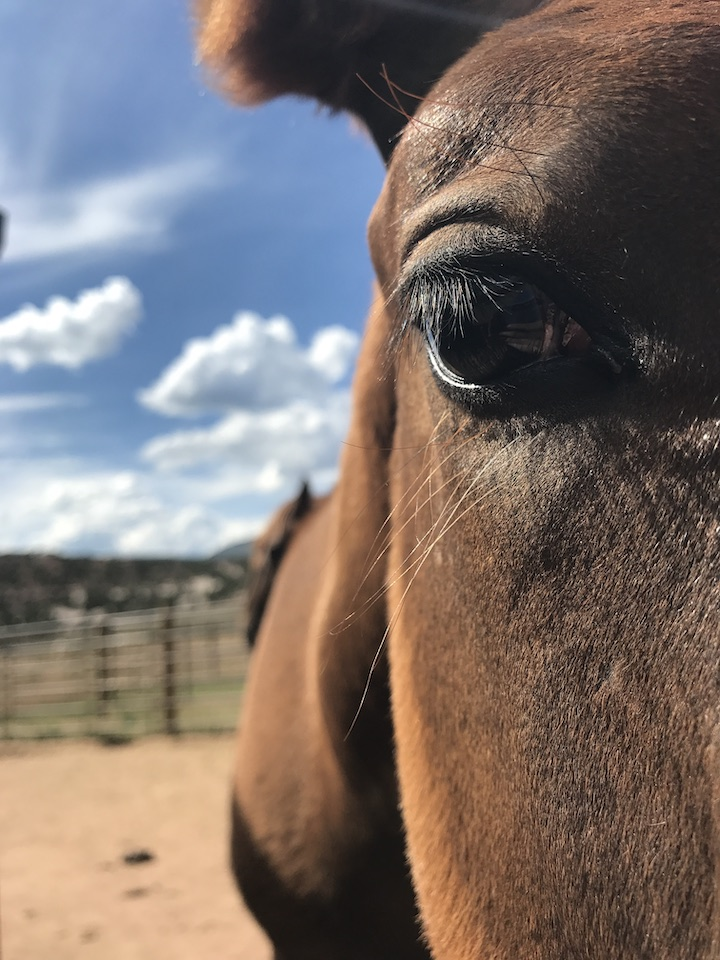

{kind=link}
Cyber Terrorism / First Capstone
For my first capstone, I researched the characteristics which might be most helpful in predicting cyber-attacks, with thanks to the University of Maryland's Global Terrorism Database.
I most recently served as a data scientist for a local non-profit consulting group, assisting with data management, analysis and research. Beforehand, I conducted a fair amount of research during my graduate studies. Some of this research was overseas in musty old libraries with manuscripts older than our country. Some of it was stateside, oftentimes at the Library of Congress. While I ultimately decided to see what jobs fell outside of the academic realm, I knew I wanted to find something where I could continue using my research skills.
Though I considered law-school for quite awhile, I also looked into development programs since I always had a concurrent interest in tech. Once I found the existence of data-science bootcamps, I was sold. I enjoyed learning the material with Thinkful and working on various projects throughout the curriculum. I find the combination of wrangling, analysis, visualization and problem-solving to be fascinating. Using data, statistics and code to assess a given situation and sift out potential solutions is right up my alley.
Outside of work, I enjoy hanging out with friends in the mountains of Colorado (either on horseback, skiis or a mountainbike). I can also be found knitting or building an automated green house.
Here are a few other assignments and projects I've worked on. Feel free to take a look. For a look at projects I am currently working on (including NLP and computer vision projects), see below.
For my first capstone, I researched the characteristics which might be most helpful in predicting cyber-attacks, with thanks to the University of Maryland's Global Terrorism Database.
In this exercise, we applied some clustering techniques to Boston Marathon data. I also worked on some visualizations.
This notebook was a drill on running some more clustering models - with a fun data-set.
In preparation for some NLP projects, I did some scraping to see what text I could get from a search result on Medium.

If Latin grammatical descendants are still used in congressional impeachment hearings, I would argue no. Current projects include NLP with medieval Latin as well as computer vision in ancient contexts.I will post my NLP project as soon as possible. Computer vision examples available upon request.
Image provided by The J. Paul Getty Museum's Open Content Program. See the original manuscript here.
If you have an opening where my skills could be of use, please feel free to reach out!
{kind=link}
{kind=link}
{kind=link}